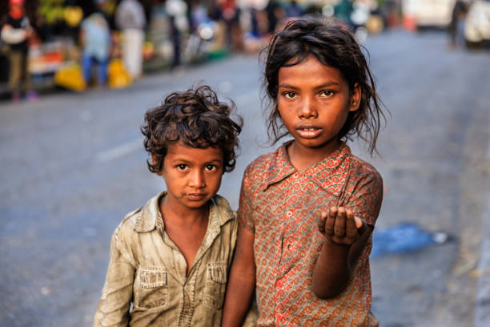

Zero hunger is a pivotal aspect of sustainable development, intertwining efforts to eradicate poverty and ensure equitable access to food. Sustainable development strategies prioritize inclusive economic growth, social protection measures, and investments in education and healthcare to address the root causes of hunger. Additionally, sustainable agriculture plays a crucial role in promoting food security while preserving the environment through practices that enhance productivity, conserve natural resources, and build resilience to climate change. By addressing hunger within the framework of sustainable development, societies can work towards a future where all individuals have access to nutritious food, fostering health, well-being, and prosperity for generations to come. Zero hunger is intricately linked with sustainable development, as it addresses not only the immediate need for food but also the broader goals of poverty eradication and social equity. Sustainable development initiatives focus on enhancing food security through inclusive economic growth, equitable access to resources, and sustainable agricultural practices. By prioritizing these efforts, societies can create resilient food systems that ensure everyone has access to nutritious food, paving the way for a world where hunger is eliminated and all individuals can thrive.

ZERO